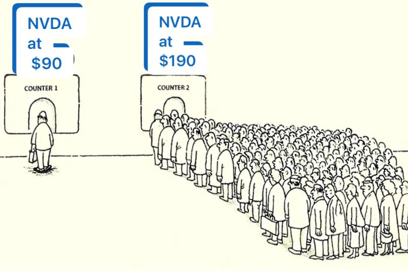

최근 순풍산부인과 하이닉스 장면이 화제가 됐다.
드라마 속 인물이 하이닉스 주식을 샀다 팔았다 하며 돈을 버는 장면인데, 그걸 보고 많은 사람들이 "사고 팔면 돈 버는 거 아냐?"라고 생각하게 된다.
그런데 현실은 다르다.
사고 팔수록 손해인 이유
주식을 자주 사고 팔면 매매 수수료와 세금이 쌓인다. 더 큰 문제는 타이밍을 맞추는 게 거의 불가능하다는 것이다. 내릴 것 같아서 팔았더니 오르고, 오를 것 같아서 샀더니 내린다.

전문 트레이더도 장기적으로 시장 평균을 이기지 못한다는 연구 결과는 넘쳐난다.
그래서 나온 결론이 바이앤홀드(Buy and Hold) — 좋은 것을 사서, 그냥 갖고 있는 것이다.
워런 버핏의 코카콜라
바이앤홀드의 대표 사례는 워런 버핏과 코카콜라다. 버핏은 1988년에 코카콜라 주식을 대량으로 매수했고 지금까지도 보유하고 있다. 코카콜라는 뭔가 혁신적인 기업이 아니다. 수십 년째 같은 음료를 팔고 있다. 그런데 그게 강점이다. 수십 년 동안 전 세계에서 팔리는 일등 브랜드를 장기 보유한 것만으로 버핏은 어마어마한 수익을 거뒀다.
핵심은 "무엇을 살지"보다 "얼마나 오래 갖고 있을지"다.
삼성전자, 10년만 버텼어도
멀리 갈 것도 없다. 2015년쯤 삼성전자를 사서 그냥 묻어둔 사람이 방송에 나온 적이 있다. 그 사람이 특별히 대단한 분석을 한 게 아니었다. 그냥 좋은 회사라고 생각해서 샀고, 팔지 않았을 뿐이다. 10년 남짓 사이에 수익은 어마어마했다.
그사이 주가는 반 토막도 나고 전쟁 이슈도 있었고 온갖 악재가 있었다. 팔 기회는 수도 없이 많았다. 그런데 그때마다 팔지 않은 것이 정답이었다.
금의 역사
주식만 그런 게 아니다. 금의 역사적 시세를 보면 더 확실해진다. 단기적으로는 오르고 내리고를 반복하지만, 수십 년 단위로 보면 우상향이다. 1970년대에 금을 사서 지금까지 보유한 사람의 수익률은 상상을 초월한다.
금을 자주 사고 팔았다면? 어느 시점엔 팔았을 것이고, 그 이후의 상승분은 놓쳤을 것이다.

다만, 달걀은 여러 바구니에
바이앤홀드가 최선이라고 해서 한 종목에 전 재산을 넣으란 소리가 아니다. "달걀을 한 바구니에 담지 마라"는 투자의 고전적인 격언이 여기에도 적용된다.
아무리 좋은 회사라도 망할 수 있다. 한 자산군이 오를 때 다른 자산군은 내리기도 한다. 그래서 포트폴리오 분산은 바이앤홀드와 함께 반드시 고려해야 한다. 주식, 금, 부동산, 채권 등 여러 바구니에 나눠 담고, 그 각각을 장기 보유하는 것이 현실적인 전략이다.
복잡하게 생각할 필요 없다. 좋은 것을 사서, 나눠 담고, 오래 갖고 있으면 된다.
사고 파는 재미는 있을 수 있다. 그런데 그게 수익으로 이어지는 경우는 생각보다 훨씬 드물다.